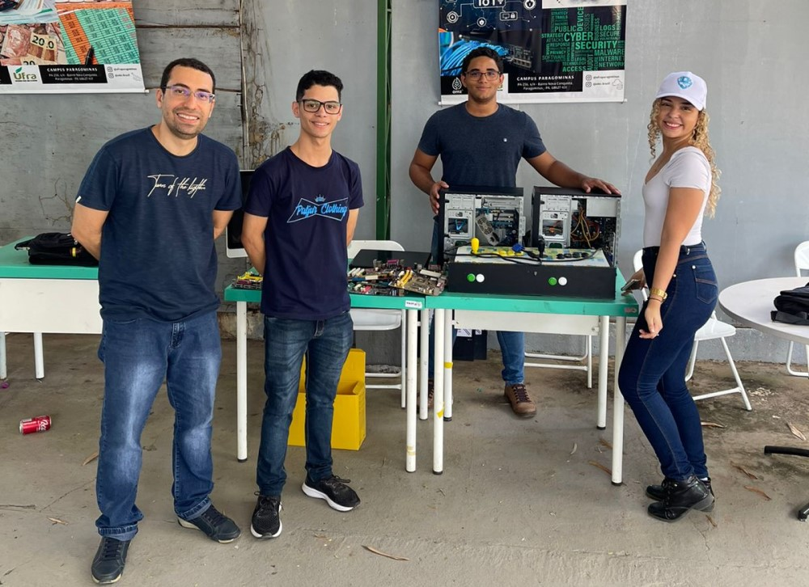
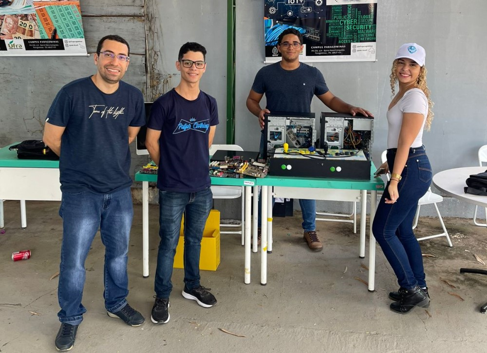
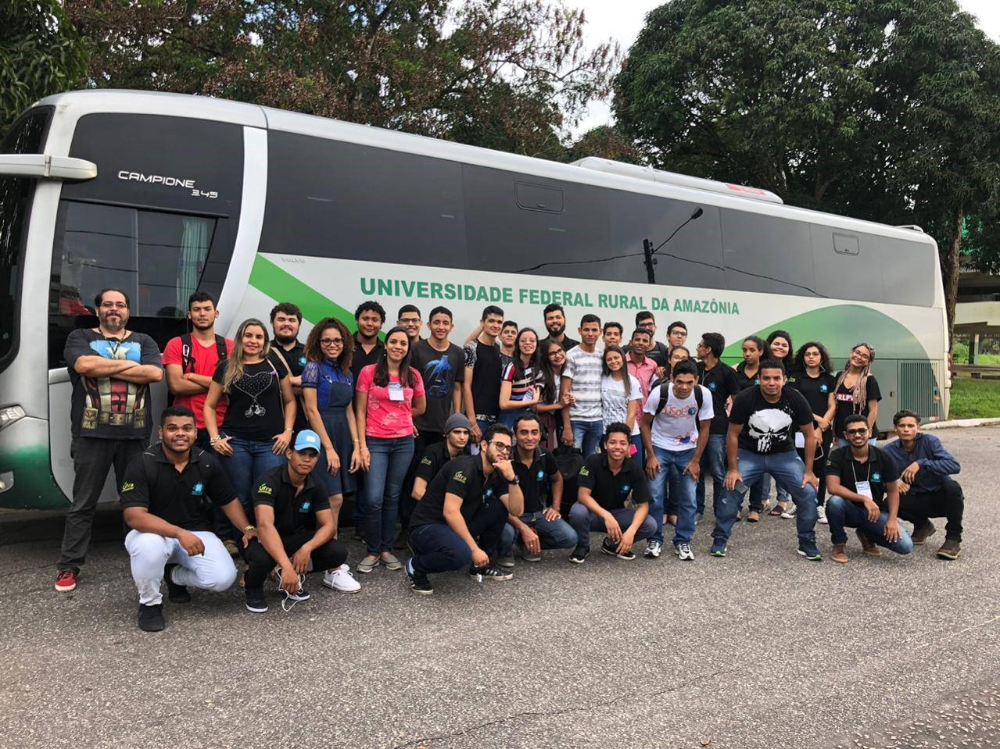
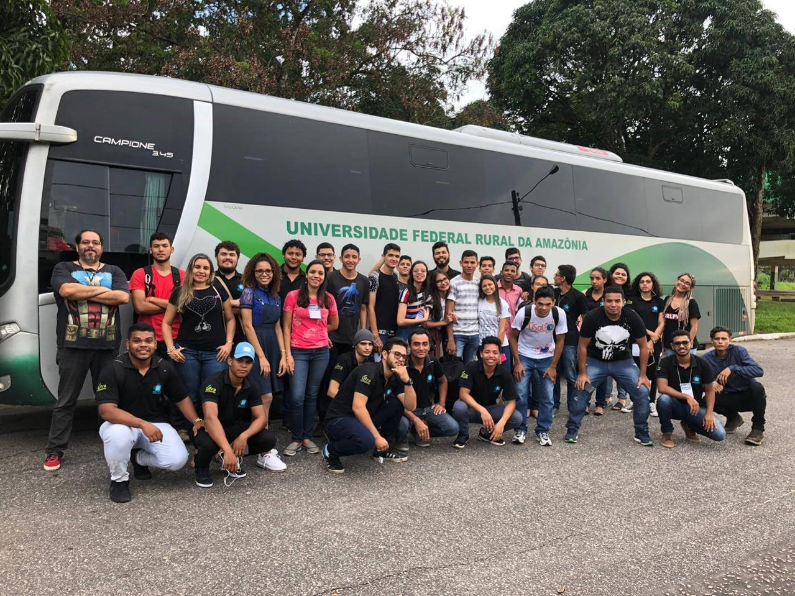
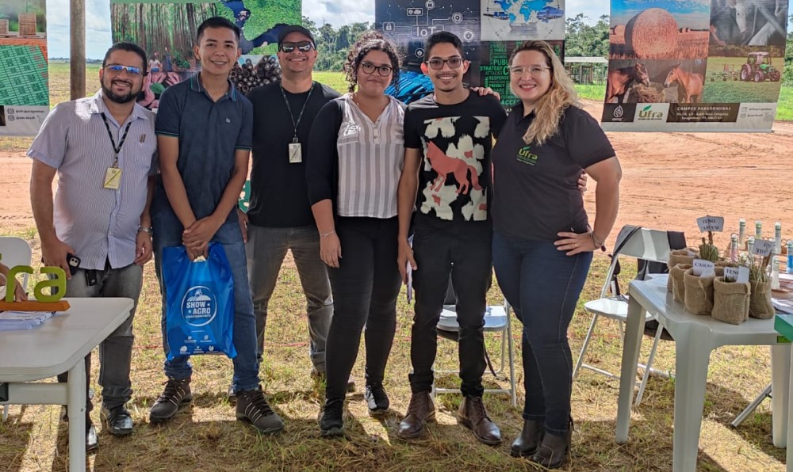
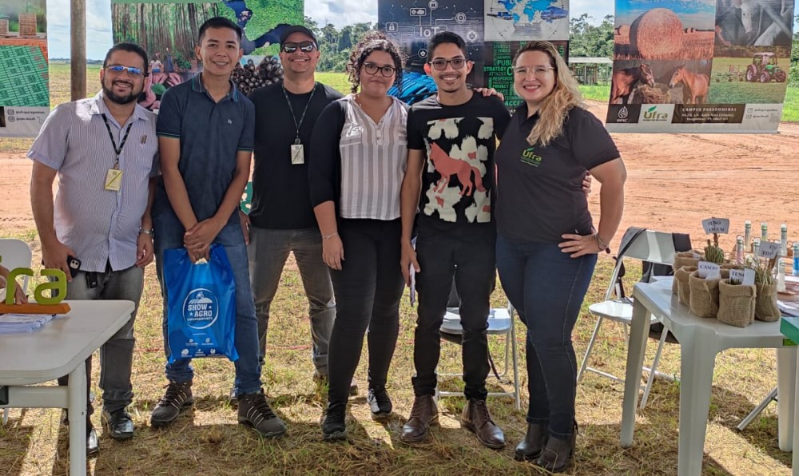
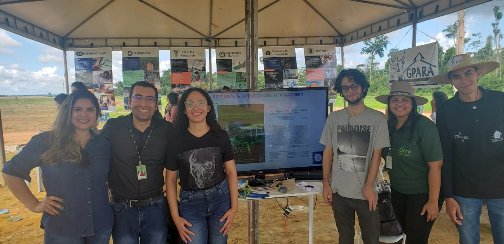
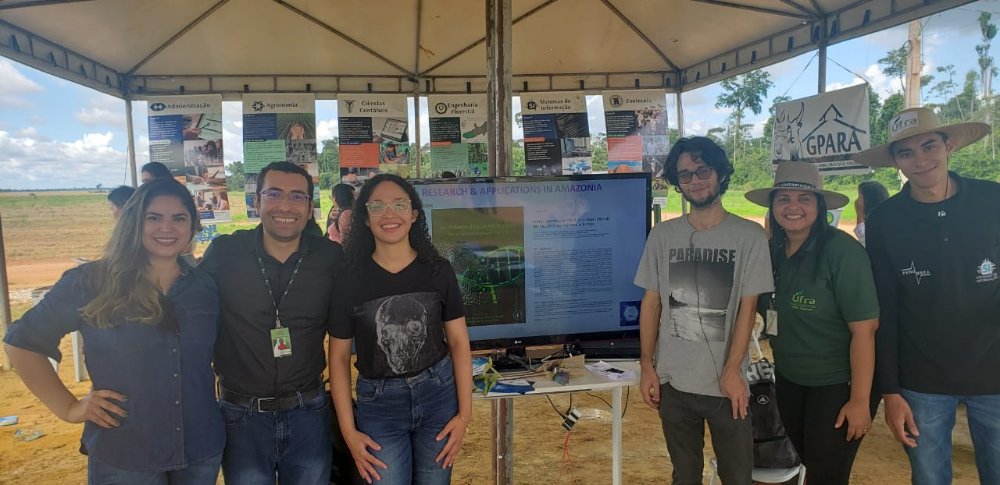

CERIMONIA DE ABERTURA
21 de novembro de 2022
APRESENTAÇÃO DE RESUMOS
22 de novembro de 2022
APRESENTAÇÃO DE ARTIGOS
23 de novembro de 2022
ENCERRAMENTO
24 de novembro de 2022
 

 


 

 

21 de novembro de 2022
22 de novembro de 2022
23 de novembro de 2022
24 de novembro de 2022
Estudantes GRATUITO até 20/11/2022
Profissionais GRATUITO até 20/11/2022
05/09/2022 - 01/11/2022
Artigos completos
Resumo
Segue os modelos de templates, tanto para projetos completos quanto
para resumos,
adapte ao seu projeto respeitanto o padrão e envie na pagina de submissão.
COMPLETO
RESUMO
A máscara funciona como um bloqueio para que o vírus não seja transmitido para outra pessoa nem contamine objetos por perto.
Lavar as mãos com água e sabão é uma prática altamente recomendada na prevenção do novo corona virus,
Álcool gel é eficaz como forma de prevenção do novo coronavírus e deve ser utilizado nas mãos e em objetos.
Durante o evento é importante manter o distanciamento de 1,5m ( um metro e meio ). Use mascara e mantenha a sua vida e a do próximo protegida, higienize as mãos sempre que precisar no campus, vamos todos juntos contra a COVID-19